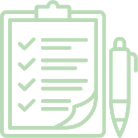
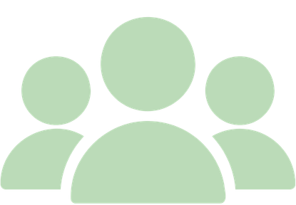
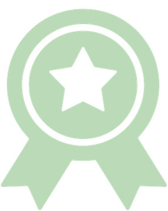
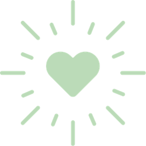

Reflections
1

Preparing for Success
Throughout my life, academics have always been a strong focus of mine. During high school, I tried my best to take as many dual credit courses as I could. By doing so, I hoped to reduce some of my future academic stress when beginning college while also saving money. I also knew that I wanted to continue my education and attend graduate school for a master’s degree in speech-language pathology. My goal was to turn a six-year journey into a five-year journey. Going into my freshman year of college, I transferred in with 27 credit hours. However, the journey didn’t stop there. During the summers before my freshman and sophomore years, I completed nine credit hours each summer. I also took a winter class through my local community college. There were many times when I felt overwhelmed by my course load. However, I remained determined to accomplish my goals and stick to the plan I had created for myself. In addition to working toward completing my undergraduate degree early, I have already begun preparing for graduate school. The summer before my final undergraduate year, I completed a three-credit-hour clinical apprenticeship through which I obtained 24 hours of supervised clinical experience that can be applied toward my graduate clinical requirements. Through my dedication to my academic work, I am proud to be on track to complete my undergraduate degree in three years while continuing to prepare for the next step in my education.
2

Involvement
In high school, I was involved in athletics, clubs, and extracurricular activities. I knew I wanted to remain involved throughout my college years to meet new people, gain new experiences, and continue to grow as a person. Going into college, I knew that I wanted to join a sorority. I wanted the meaningful friendships, commitment, volunteer work, accountability, and everything else that came with it. Since joining Alpha Delta Pi, I have served as a subliaison for RAMS Greek Week, participated in the Peer Mentor Program, and contributed to volunteer efforts such as late-night dinners supporting our Ronald McDonald House philanthropy, all while developing meaningful friendships through our sisterhood. Outside of Alpha Delta Pi, I joined the National Student Speech Language Hearing Association (NSSLHA), the Disability Center Peer Mentor Program, and the Club Volleyball Team. Even while working toward completing my undergraduate degree in three years, I have made it a priority to remain involved and experience college beyond academics. Although involvement can seem overwhelming to balance, I have learned that it is most meaningful to choose activities that I am truly passionate about.
3

Achievements
I am thankful for my academic drive and the path it has allowed me to take. Going into college, I wasn’t really sure what career path I wanted to pursue. One thing I was sure of was that my hard work would set me up for whatever path I wanted to take. With my 27 dual credit hours, I earned straight A’s, transferring in with a 4.0 GPA. Personally, I put a lot of academic pressure on myself. When I began college, I didn’t want to set a specific goal, like graduating with a 4.0. Instead, my goal was to earn the best GPA I could while putting as much effort as possible into each of my classes. As long as I knew I had done that, I was going to be content. At this point, entering my third year of college, I currently have a 3.9 overall GPA. I have consecutively made the Dean’s List for the Fall 2024, Spring 2025, Fall 2025, and Spring 2026 semesters. Furthermore, I earned a scholarship through the Bausch Health Scholarship Fund, which supports students aspiring to careers in medical fields and recognizes their achievements. Any college student should be extremely proud of these accomplishments. However, in the back of my mind, I always question, “What could I have done better?” This is where I have to remind myself of the goal I set. I know that I did everything I was capable of doing and gave my best effort throughout my undergraduate education. Sometimes, it is hard to recognize your own achievements, and in today’s society, it is extremely easy to compare yourself to others. Looking back at what I have accomplished, I have learned that the only person setting these standards for me is myself.
4

My Why
During my senior year of high school, I was accepted into the Early Admissions Program for Nuclear Medicine. I couldn’t have been more excited or felt more support from the people around me. However, as I began college, I started having doubts about whether this was the right field for me. I became sure that I wanted to switch my major, but felt so guilty and as though I was letting people down. I wasn’t really sure what I wanted to switch to, but ultimately chose nursing. I figured this was an option that would allow me to work in various settings, but again, in the back of my mind, I still knew something wasn’t right. I began to reflect on everything I could possibly want to do. As someone who has lost count of the number of bones I have broken, radiology was always an interest of mine. Additionally, seeing my mom teach my whole life, I always had an interest in teaching as well. This is when I discovered the field of speech-language pathology. I originally knew what a speech-language pathologist (SLP) was, but wasn’t aware of the diverse settings in which they could work. The moment I discovered what a medical SLP was, I changed my major. Later, I shadowed a medical SLP at MU Hospital. I immediately knew that this was exactly where I belonged. After recently completing my clinical apprenticeship at MU Robert G. Combs Language Preschool, my perspective on my future career changed even further. I entered the apprenticeship convinced that I wanted to pursue medical speech-language pathology and was unsure about working with children. However, I ended the experience realizing how much I loved working with the preschool population. This experience taught me that while I may not know exactly which setting I will ultimately pursue, I know that I have found the right field for me.